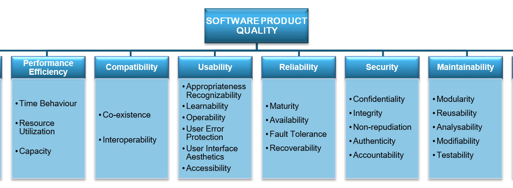

Fase 1 – Processo de Avaliação
Contexto de Trabalho
Este trabalho foi desenvolvido no âmbito da disciplina de Qualidade de Software, com o objetivo de proporcionar aos alunos a compreensão, do início ao fim, da execução de um processo de avaliação de um produto de software, aplicando conceitos, metodologias e normas padronizadas e reconhecidas internacionalmente.
Software Escolhido
O software escolhido para a realização do trabalho é o ChamaControl [1], criado por estudantes da disciplina de Métodos de Desenvolvimento de Software da Universidade de Brasília. Os estudantes atuaram como responsáveis pela implementação técnica do sistema e também como operadores durante a execução acadêmica, cuidando da infraestrutura e manutenção básica.
A disponibilização do software ocorreu de forma aberta, em repositório público, o que permite classificá-los também como fornecedores da solução. A avaliação é conduzida por estudantes da disciplina de Qualidade de Software, sendo essa avaliação requisitada pela professora da turma.
Os usuários finais abrangem cidadãos em geral, pesquisadores, órgãos públicos e organizações ambientais, todos interessados em acessar informações atualizadas sobre queimadas de forma simples e confiável.
| Nome do produto | Versão do produto |
|---|---|
| ChamaControl | v1.0.0 (Versão inicial acadêmica) |
Domínio de Aplicação
O sistema se insere no domínio de monitoramento ambiental, oferecendo uma interface web intuitiva para a consulta de dados públicos do INPE relacionados a focos de incêndio no Brasil. O ChamaControl organiza informações de forma estruturada e acessível, permitindo acompanhar tanto os registros anuais de queimadas quanto os focos diários mais recentes, atualizados todos os dias às 10h com base em arquivos disponibilizados pelo INPE.
Classificação Técnica
Assim, o ChamaControl foi classificado como Software de Tempo Real conforme Pressman [2] (2002), devido à sua função de monitoramento contínuo de incêndios e necessidade de resposta em tempo útil.
Funcionalidades do Sistema
Além dos dashboards interativos, o sistema incorpora uma tela dedicada a notícias sobre queimadas, alimentada por meio da API do GNews, fornecendo informações complementares e contextualizadas sobre os eventos monitorados.
Para manter a base de dados atualizada, o ChamaControl conta com três scrapers principais:
- processaDadosAnual, que popula o banco de dados com registros históricos entre 2003 e 2024;
- processaDadosDiarios30Dias, que insere os focos registrados diariamente nos últimos 30 dias;
- processaDadoDiario, responsável por atualizar a aplicação diariamente com os dados mais recentes.
Modelo de Qualidade
O modelo de qualidade utilizado nesta avaliação fundamenta-se na norma ISO/IEC 25010 [3], integrante da série SQuaRE (Systems and Software Quality Requirements and Evaluation). Esta norma foi desenvolvida para fornecer critérios claros e abrangentes na avaliação de sistemas e softwares.

Figura 1: Características do modelo de qualidade
Caracterísitcas de Qualidade
Para a avaliação de qualidade do software ChamaControl, foram selecionadas e priorizadas as características Manutenibilidade e Eficiência de Desempenho, com base no modelo de qualidade da norma ISO/IEC 25010 [3]. A escolha dessas características foi realizada utilizando a matriz impacto x risco, permitindo uma análise quantitativa e estruturada que assegura decisões robustas, alinhadas aos objetivos do sistema e às necessidades dos stakeholders. Essa abordagem garante que os aspectos críticos do software, tanto em termos de manutenção quanto de desempenho, sejam cuidadosamente monitorados e aprimorados.
Classificação e Ênfase das Características de Qualidade
Nesta etapa inicial do processo de avaliação, foram definidas as características de qualidade a serem analisadas com base nos objetivos do trabalho e no perfil do público-alvo do ChamaControl.
Para apoiar a priorização das características de qualidade, foi utilizada a Matriz Impacto x Risco. Esse método permite classificar cada característica considerando não apenas sua importância para o sucesso do sistema (impacto), mas também a probabilidade de gerar problemas ou dificultar a evolução do software (risco). A análise garante que as escolhas não sejam subjetivas, mas fundamentadas em critérios objetivos.
A pontuação foi calculada pela soma simples entre Impacto e Risco.
Soma = Impacto + Risco
A seguir a tabela com as informações de Impacto e Risco atribuídas a cada característica de qualidade com seus devidos resultados.
Tabela Impacto x Risco
| Característica | Impacto (1-5) | Risco (1-5) | Soma |
|---|---|---|---|
| Eficiência de Desempenho | 5 | 4 | 9 |
| Manutenibilidade | 5 | 4 | 9 |
| Usabilidade | 3 | 3 | 6 |
| Confiabilidade | 2 | 2 | 4 |
| Segurança | 1 | 2 | 3 |
| Compatibilidade | 1 | 2 | 3 |
| Portabilidade | 1 | 2 | 3 |
| Funcionalidade | 1 | 2 | 3 |
Tabela 1: Impacto x Risco Características de Qualidade com Soma Final
Motivação para Definição dos Pesos
-
Eficiência de Desempenho (5 de Impacto e 4 de Risco): O ChamaControl é um sistema de monitoramento que precisa atualizar e exibir dados em tempo útil, atrasos ou processamento lento comprometem a utilidade para os usuários. O risco é elevado porque os scrapers e o pipeline de dados podem se tornar gargalos, além disso a arquitetura é acadêmica e pode não estar otimizada.
-
Manutenibilidade (5 de Impacto e 4 de Risco): Como projeto open-source, mantido por estudantes e com potencial continuidade, a capacidade de entender, modificar e testar o código é crítica. Risco alto porque código acadêmico frequentemente falta documentação, testes e modularidade suficientes, dificultando evolução e correções rápidas.
-
Usabilidade (3 de Impacto e 3 de Risco): A interface afeta diretamente a aceitação pelos usuários finais, mas não impede a funcionalidade básica (dados continuam disponíveis). Risco moderado: se a interface for confusa, usuários não aproveitarão os dados, mas isso não "quebra" o sistema.
-
Confiabilidade (2 de Impacto e 2 de Risco): Erros e inconsistências impactam confiança, porém o domínio (dados públicos do INPE) permite validações externas.
-
Segurança (1 de Impacto e 2 de Risco): O sistema consome e exibe dados públicos, não há tratamento de dados sensíveis ou autenticação complexa explicitada.
-
Compatibilidade (1 de Impacto e 2 de Risco 2): A compatibilidade é desejável, mas não crítica para o propósito imediato.
-
Portabilidade (1 de Impactoe 2 de Risco 2): Migrar para outro ambiente não é prioridade agora, logo impacto baixo.
-
Funcionalidade (1 de Impacto e 2 de Risco 2): As funcionalidades essenciais já existem (scrapers, API, frontend). O foco atual é eficiência/manutenibilidade; portanto funcionalidade tem baixa prioridade relativa, com risco operacional baixo-moderado.
A partir da Tabela 1, com o intuito de ajustar o escopo ao semestre letivo, decidimos priorizar as características de acordo com a soma e definir intervalos de prioridades, sendo eles:
- Alta prioridade: soma >= 8
- Média prioridade: soma entre 5 e 7
- Baixa prioridade: soma <= 4
Com os intervalos, selecionamos as características que estão em "Alta Prioridade". Sendo a tabela final de priorização:
Tabela Final de Priorização das Características
| Característica | Soma | Prioridade |
|---|---|---|
| Eficiência de Desempenho | 9 | Alta prioridade |
| Manutenibilidade | 9 | Alta prioridade |
| Usabilidade | 6 | Média prioridade |
| Confiabilidade | 4 | Baixa prioridade |
| Segurança | 3 | Baixa prioridade |
| Compatibilidade | 3 | Baixa prioridade |
| Portabilidade | 3 | Baixa prioridade |
| Funcionalidade | 3 | Baixa prioridade |
Tabela 2: Definição das Características de Qualidade a serem avaliadas
Essa priorização servirá como base para a definição das métricas e critérios de avaliação, garantindo o foco nos aspectos mais relevantes para a análise do sistema. Considerando as características priorizadas, foram elicitadas as seguintes subcaracterísticas, de acordo com o modelo de qualidade ISO/IEC 25010 [3]:
Figura 2: Características de qualidade escolhidas conforme priorização
Objetivo da avaliação
A análise de qualidade do ChamaControl busca verificar se o sistema atende aos padrões definidos pelo modelo ISO/IEC 25010 [3], considerando atributos de Eficiência de Desempenho e Manutenibilidade. Entre os objetivos específicos destacam-se:
-
Avaliar se o sistema utiliza os recursos computacionais de forma adequada e se responde dentro de prazos aceitáveis, considerando seu propósito de monitoramento ambiental;
-
Identificar melhorias que possam otimizar o tempo de resposta, a utilização de recursos e a capacidade do sistema;
-
Examinar o grau de modularidade, testabilidade e modificabilidade do software, verificando se sua estrutura favorece manutenção e evolução;
Portanto, ao final do processo de avaliação, procura-se produzir diagnóstico técnico direcionado a essas duas características e relatórios de comparações com sistemas de propósito semelhante, que servirão como base para ajustes futuros e possível continuação do software.
Escopo, Profundidade e Objetos de Avaliação
Escopo
A avaliação abrangerá os principais módulos do sistema ChamaControl, a saber:
- Coleta de dados: Scrapers responsáveis pela importação e atualização de dados do INPE (.csv) e do GNews (notícias).
- Armazenamento: Estrutura de persistência em banco de dados MySQL.
- API Backend: Endpoints em Node.js/Express responsáveis por fornecer dados processados.
- Front-end: Interface desenvolvida em React/Vite, incluindo componentes, rotas e visualizações gráficas.
Abaixo são mencionados quais módulos do sistema estão Fora do escopo e portanto, não serão avaliados nesta fase:
- Configurações de infraestrutura (Docker e docker-compose).
- Ferramentas externas de teste/documentação (Postman, Swagger).
Profundidade
O nível de análise será intermediário, contemplando:
- Verificação de corretude das principais funcionalidades (coleta, armazenamento, exibição e consumo de API).
- Testes funcionais de cenários típicos (visualização de gráficos, acesso às notícias, chamadas básicas à API).
- Checagem de consistência entre dados coletados e exibidos.
Não serão realizados:
- Testes extensivos de performance.
- Testes de segurança avançada.
- Análises profundas de logs de execução.
Objetos de Avaliação
Funcionalidades específicas:
- Execução diária do scraper.
- Consulta de dados históricos e recentes via API.
- Renderização de gráficos de focos de incêndio no front-end.
- Exibição de notícias atualizadas sobre queimadas.
Fluxos principais de usuário:
- Acesso à interface web (navegação entre páginas).
- Consulta e interpretação de dados apresentados em gráficos.
- Visualização de notícias integradas ao sistema.
ODS Relacionados e Metas Associadas
A avaliação do ChamaControl também se conecta a objetivos mais amplos, especialmente aos Objetivos de Desenvolvimento Sustentável (ODS) da ONU [4] , reforçando a relevância social e ambiental do sistema.


Principal
Meta 13.1: Reforçar a resiliência e a capacidade de adaptação a riscos relacionados ao clima e desastres naturais.
Indicador: Frequência de atualização dos focos de incêndio por estado/região (diária, às 10h).
Pertinência: O ChamaControl fornece dados atualizados diariamente, permitindo respostas rápidas a novos incêndios e fortalecendo a adaptação a eventos climáticos, mesmo no nível estadual.
Meta 13.3: Melhorar a conscientização e a capacidade institucional sobre mitigação e adaptação.
Indicador: Número de acessos ao painel e notícias relacionadas a incêndios.
Pertinência: Ao disponibilizar dashboards interativos e notícias atuais integradas, o software amplia a conscientização da população e de órgãos públicos sobre os impactos ambientais dos incêndios.
Meta 15.1: Assegurar a conservação e uso sustentável de ecossistemas terrestres.
Indicador: Áreas impactadas monitoradas por estado/região (dados INPE).
Pertinência: O sistema organiza informações históricas (2003–2024) e diárias, permitindo avaliar danos ambientais e subsidiar políticas de preservação da biodiversidade em nível regional.
Meta 15.5: Reduzir a degradação de habitats naturais e perda de biodiversidade.
Indicador: Número de focos detectados em regiões com proteção ambiental.
Pertinência: O monitoramento estadual permite identificar incêndios em ecossistemas sensíveis, podendo fornecer dados úteis para ações de proteção ambiental.
Secundária
Meta 3.9: Reduzir mortes e doenças causadas pela poluição do ar.
Indicador: Quantidade de focos em regiões urbanas e notícias sobre impactos à saúde.
Pertinência: O software evidencia a relação entre queimadas e risco à saúde em escala estadual, apoiando políticas de prevenção e conscientização.
Meta 9.5: Melhorar a capacidade tecnológica de setores relevantes.
Indicador: Volume de dados processados pelos scrapers e funcionalidades implementadas.
Pertinência: O ChamaControl aplica inovação tecnológica ao coletar, organizar e exibir dados ambientais em tempo real, fortalecendo a infraestrutura digital para análise e tomada de decisão.
Meta 11.5: Reduzir perdas humanas e econômicas por desastres relacionados ao clima.
Indicador: Número de focos de incêndio próximos a regiões urbanas por estado.
Pertinência: Ao mapear incêndios próximos a áreas urbanas em nível estadual, o sistema ajuda gestores públicos a planejar ações preventivas, mesmo sem detalhamento municipal.
Conclusão
A Fase 1 permitiu estruturar de forma clara o processo de avaliação do ChamaControl, definindo o contexto, objetivos, escopo, métricas e alinhamento com os ODS da ONU.
Esse trabalho inicial fornece a base para análises mais aprofundadas nas próximas etapas, garantindo que o sistema seja avaliado de maneira sistemática e orientada a melhorias contínuas.
Declaração de Uso da IA: Durante a elaboração deste documento foram utilizadas ferramentas de inteligência artificial baseadas em modelos de linguagem como apoio para:
(1) sugerir uma organização coerente dos tópicos;
(2) revisar ortografia e gramática;
(3) verificar a cobertura dos critérios do documento de avaliação.
Todas as sugestões foram revisadas e, quando apropriado, editadas manualmente pela(s) pessoa(s) responsável(is) pelo trabalho.
Referências Bibliográficas
[1] ChamaControl. Disponível em: https://github.com/unb-mds/2024-2-ChamaControl. Acesso em: 29 de setembro de 2025
[2] PRESSMAN, Roger S. Engenharia de Software: Uma Abordagem Profissional. 6. ed. São Paulo: McGraw-Hill, 2002. Disponível em: https://archive.org/details/pressman-engenharia-de-software-uma-abordagem-profissional-8a/mode/2up. Acesso em: 29 de setembro de 2025.
[3] ISO/IEC 25010:2011. Systems and software engineering — Systems and software Quality Requirements and Evaluation (SQuaRE) — System and software quality models. Geneva: ISO, 2011. Disponível em: https://iso25000.com/index.php/en/iso-25000-standards/iso-25010. Acesso em: 29 de setembro de 2025.
[4] ORGANIZAÇÃO DAS NAÇÕES UNIDAS. Objetivos de Desenvolvimento Sustentável. As Nações Unidas no Brasil, 2025. Disponível em: https://brasil.un.org/pt-br/sdgs. Acesso em: 29 de setembro de 2025.
[5] ORGANIZAÇÃO DAS NAÇÕES UNIDAS. Objetivo de Desenvolvimento Sustentável 13: Ação contra a mudança global do clima. Disponível em: https://brasil.un.org/pt-br/sdgs/13. Acesso em: 29 set. 2025.
[6] ORGANIZAÇÃO DAS NAÇÕES UNIDAS. Objetivo de Desenvolvimento Sustentável 15: Vida terrestre. Disponível em: https://brasil.un.org/pt-br/sdgs/15. Acesso em: 29 set. 2025.
[7] ORGANIZAÇÃO DAS NAÇÕES UNIDAS. Objetivo de Desenvolvimento Sustentável 3: Saúde e Bem-Estar. Disponível em: https://brasil.un.org/pt-br/sdgs/3. Acesso em: 29 set. 2025.
[8] ORGANIZAÇÃO DAS NAÇÕES UNIDAS. Objetivo de Desenvolvimento Sustentável 9: Indústria, Inovação e Infraestrutura. Disponível em: https://brasil.un.org/pt-br/sdgs/9. Acesso em: 29 set. 2025.
[9] ORGANIZAÇÃO DAS NAÇÕES UNIDAS. Objetivo de Desenvolvimento Sustentável 11: Cidades e Comunidades Sustentáveis. Disponível em: https://brasil.un.org/pt-br/sdgs/11. Acesso em: 29 set. 2025.
INTERNATIONAL ORGANIZATION FOR STANDARDIZATION. ISO/IEC 25010:2023 – Systems and software engineering – Systems and software Quality Requirements and Evaluation (SQuaRE) – System and software quality models. Disponível em: https://iso25000.com/index.php/en/iso-25000-standards/iso-25010. Acesso em: 29 set. 2025.
Contribuição dos Integrantes
| Integrante | Matrícula | Percentual |
|---|---|---|
| Breno Soares Fernandes | 202017540 | 16,6% |
| Bruno Ricardo de Menezes | 221007680 | 16,6% |
| Enrico Martins Mantoan Zoratto | 222006688 | 16,6% |
| Filipe Bressanelli Azevedo Filho | 222024579 | 16,6% |
| Gabriel Soares dos Anjos | 231026625 | 16,6% |
| Leonardo Henrique Sobral Sauma Junior | 231035428 | 16,6% |
Histórico de versão
| Versão | Data | Descrição | Autores |
|---|---|---|---|
| 1.0 | 29/09/2025 | Criação da página inicial, inclusão de contexto e software, definição de escopo e profundidade, métricas, priorização das características de qualidade, revisão final, conclusão e formatação | Breno Soares, Bruno Ricardo, Enrico Zoratto, Filipe Azevedo, Gabriel dos Anjos, Leonardo Sauma Jr |
| 1.1 | 01/10/2025 | Ajustes, adição da representação visual das características escolhidas | Filipe Azevedo |
| 1.2 | 01/10/2025 | Adição do tópico "Uso de IA" e reajuste do código md para melhorias na visualização e organização dos tópicosv | Gabriel Soares |
| 1.3 | 01/10/2025 | Adicionando priorização Impacto x Risco | Leonardo Sauma |
| 1.4 | 01/10/2025 | Ajustando ODS, adicionando meta/indicadores e persistência no software | Leonardo Sauma |